Core Area · For SMEs & Employers
AI Workforce & SME Adoption
This core area helps Canadian SMEs and employers build the people, workflows, governance, and measurement habits needed for practical AI adoption. It is the bridge between AI interest and responsible workplace deployment.
The adoption engine for Canadian workforces and SMEs.
AIC uses this core area to help organizations understand where AI can create value, prepare teams to use it responsibly, and move selected workflows toward implementation. The focus is not abstract awareness; it is business capability, employee confidence, and measurable improvement.
AI adoption needs structure
Many organizations are interested in AI but lack a clear path from experimentation to governed, practical use. This core area gives that path a home.
Employers, SMEs and teams
Built for business owners, HR leaders, operations teams, education providers, professional services firms, and organizations preparing their workforce for AI-enabled work.
Capability, not hype
Organizations leave with trained people, mapped workflows, responsible AI guardrails, adoption priorities, and a clearer way to measure impact.
From AI curiosity to measurable impact, in five steps.
The core area is organized around a simple operating pathway that can support training, consulting, workflow implementation, and long-term optimization.


Built for practical organizations that need business results.
- Small and medium-sized businesses
- Education and training providers
- Professional services firms
- Healthcare administration teams
- Nonprofits and community organizations
- Property management and service businesses
Services connected to this core area.
These are the practical engagement options for organizations that want to begin with workforce and SME adoption.
AI Readiness & Funding Pathway Review
Assess readiness, identify priority use cases, map training needs, and flag possible funding pathways.
View in Services → Build capabilityCorporate AI Training
Role-based training for executives, managers, employees, and AI champions.
View in Services → Move to useWorkflow Implementation
Turn selected business workflows into governed AI-enabled processes with implementation and measurement planning.
View in Services →